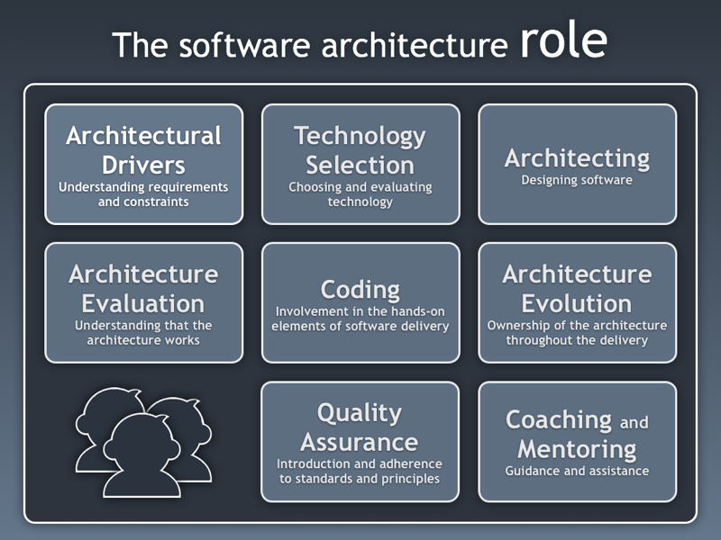

-DOB 4/12/1990
-mobile number: 0406898851
-Email: syedashah715@yahoo.com
-postal adress: 21 koomba Rise Bertram WA 6167
Holder of bachelor degree in statistics and psycology. Have highest ambitions for future in IT. A fully motivated information-technology student ready to enjoy my experience throughout my studies.
IT to me is today,s mother of all studies beacuse all of the modern world inventions depend on information systems directly or indirectly.Its roots extend from social media,education system,entertainment,artficial intelligence,space etc to our ever day needs.It is a whole world changing for the betterment of mankind.
according to Ms Maumita Bhattacharya, a lecturer in information technology at CSU “If you look at almost any workplace – or almost any facet of your life, from phones and games to the Internet of Things – we are using information technology all the time. IT is also important in future developments like robotics and automation, and the capacity for that will grow. Driverless cars, for example, look like they will become more prevalent (perhaps within the next five to 10 years in Australia), but that requires a lot of technological infrastructure and systems – from communication between cars and traffic infrastructure to how CBDs are set up to manage the traffic flow of driverless cars. That all needs to be built and managed by professionals.”
link to the above articleAccording to the article in the "above link" "Software architecture is a blueprint for both the system and the project. It defines the work assignments that must be carried out by design and implementation teams
But to my perception there is so much diversity in this field beacuse you can sketch whatever is in your mind and then build a progressive system to make your ideas complete.It is also very competitive because IT industry is changing according to consumer demands so you must stay upto date with the current period for the betterment of mankind. I plan to build new ideas through prototypes and work my way to becoming a successful software architect by using all my potential and utilising my experiences in the coming group projects

According to the test I can be there for anyone who needs help in the group. I shall make sure I give my best to the group.
Giving investment options to those with very little resources through a software,app or a website etc. Although there are lots of other platforms for investments,I would like to build one which is community based where people with same interests can come together to invest and divide the profit according to their investments. we can expand this idea to local government in which people with same beliefs for infrastructures and other community related isuues can pay charity to the different establishments according their interests. According to the article in the following link;
benifits of an investment clubThere are several reasons why you would want to start an investing club. The biggest is community and education. With an investing club, you’re working with others to identify investing ideas, and you’re probably going to learn a thing or two. Different clubs have different rules, but a common theme is each member identifies investments, and then shares their thoughts with the group for critique. Another reason why people (used to) start investment clubs was to save on costs like commissions.